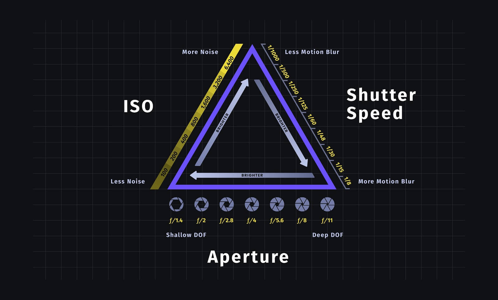

Tips And Tricks
⇤
Photography Tips
Tips to buy a camera
The rule of thirds
Know your camera
Shoot in RAW
Understand the exposure triangle

Get a tripod
Composition
Depth
Learn aperture
Click to read more about photography tips and tricks